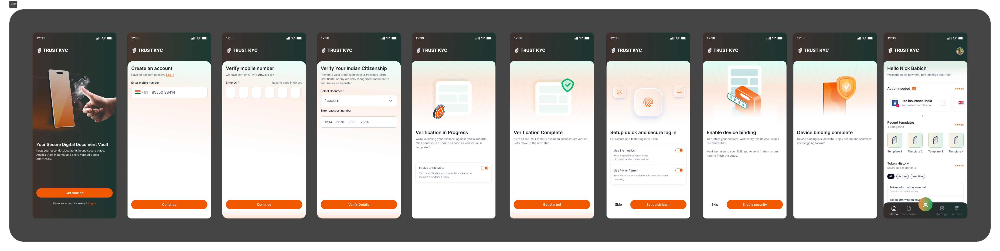
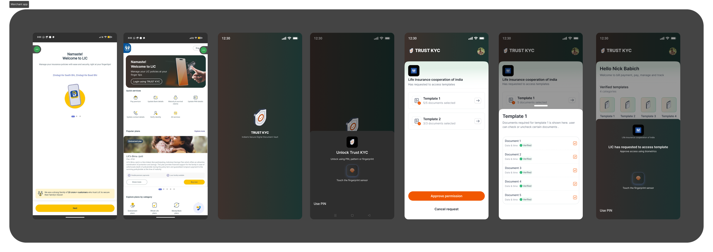

Verify once. Reuse the token everywhere.
TrustKYC turns a one-time KYC verification into a reusable, consent-gated identity token. Merchants request access to a "template" of documents instead of collecting them again.

One verification, a reusable token.
TrustKYC is a digital document vault: it verifies a user once and issues a reusable, consent-gated identity token. I designed it end to end: onboarding, verification, and the merchant consent flow that lets other services request access to that token instead of collecting documents themselves.
Every new service means redoing KYC from scratch.
A user who's already KYC-verified with one financial institution still has to re-upload the same Aadhaar, PAN, and address proof for the next insurer, lender, or wallet. Each service re-collects and re-stores the same sensitive documents, with no way for the user to control what's shared or with whom.
Repeated verification
Document upload, OTP, and manual review happen again for every new merchant relationship, even when the user was verified days earlier elsewhere.
No consent boundary
Once documents are shared, the user has no visibility into what a merchant holds or for how long. Sharing is all-or-nothing, not scoped.
What the token needed to do.
Verify once
Onboarding should feel like a one-time setup cost, not a recurring tax on every new service.
Consent, not documents
Merchants request access to a named bundle of data. The user sees and approves exactly what's shared, every time.
Reusable beyond KYC
The same verified identity should carry into other use cases, not stay siloed to one app or integration.
From friction map to a testable model.
A short, focused sprint: map where re-KYC friction actually bites, design the token/consent model, then prototype the onboarding and merchant flows against it.
Map the friction
Where re-verification actually happens, and what it costs the user.
Design the token model
What a "template" is, who can request it, and what consent looks like.
Prototype onboarding + consent
TrustKYC verification flow and the merchant request/approve screens.
Verify once, in TrustKYC.
Mobile OTP, Aadhaar verification, and a progress state that's honest about the wait. Then a quick-login and device-binding step, so the token, once issued, doesn't need re-verifying on every open.

Click to zoomConsent, not documents.
When a merchant (an insurer, in this case) needs KYC data, they don't get the user's documents. They request access to a named template: a defined bundle of documents for a defined purpose. The user sees exactly what's being asked for and approves or declines it directly.

Click to zoomThe template model over raw document sharing
Instead of merchants pulling a document list, they request a named, pre-defined bundle. Why it matters: the user reviews one clear request ("Template 1: 5 documents") instead of a permissions checklist. Honestly, that single consent screen took more iteration than the entire onboarding flow: naming and scoping the bundle so it reads as trustworthy in one glance turned out to be the hard part.
Presented as a direction, not a shipped product.
This is concept-stage work, presented internally to stakeholders rather than built and released. Its value was in making the token/consent model concrete enough to react to.
- Made the abstract concrete. "Reusable KYC" is easy to say and hard to picture. Walking stakeholders through an actual consent screen made the idea legible in a way a slide couldn't.
- Surfaced the real design problem early. The internal discussion converged quickly on consent and template scoping as the crux of the idea, not onboarding, which is what most KYC conversations default to.
Open, for now.
There's no defined next phase yet. This stays a concept until there's a specific integration to design for. The open question worth returning to: how the template model scales past a handful of merchants without turning into a permissions system nobody reads.
The hard part wasn't verification. It was consent.
Onboarding (OTP, Aadhaar, biometric setup) is a well-worn pattern. The genuinely hard design problem was the merchant consent screen: naming a bundle of documents so a user trusts it in one glance, without turning it into a checklist nobody reads. If I did this again, I'd start there, not with onboarding.